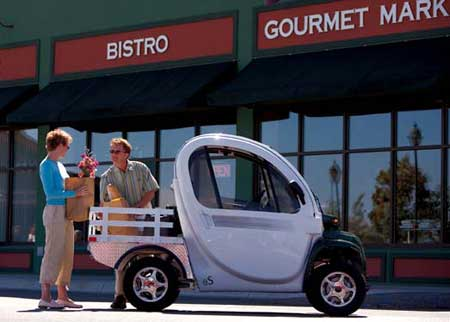

If you just need a vehicle for short trips around yourneighborhood, then you might consider buying a 'neighborhoodelectric vehicle,' or NEV. In most states, these 'carlets' canlegally travel on public roads with speed limits of 35 mph orless.
? These small, quiet and inexpensive cars can travel 25 mph for upto 30 miles before their lead-acid batteries must be recharged. Tokeep the batteries charged, you must plug in the NEV.
? The estimated annual cost to drive an NEV 100 miles a week (at 8 cents per kilowatt-hour) is only about $58.
? NEVs (as well as all electric vehicles) are marvelouslyenergy-efficient: More than 90 percent of the energy imparted tothe motor is turned into useful work; more than 85 percent of theenergy used to charge the batteries is stored effectively. Incontrast, the maximum theoretical efficiency of the typical gasengine is about 30 percent; in diesel engines it is 35 percent.This means that only a tiny fraction of that energy in a gallon ofgas actually ends up doing useful work ? the rest is wasted asheat.
So next time you need to buy an energy-efficient vehicle for shorttrips around town, give NEVs a look ? you might decide they are theperfect choice.
Some NEV manufacturers:
? Global ElectricMotorcar (GEM)
? Cart-Rite
? ColumbiaParCar
? DynastyElectric Car
|
 |
|
|